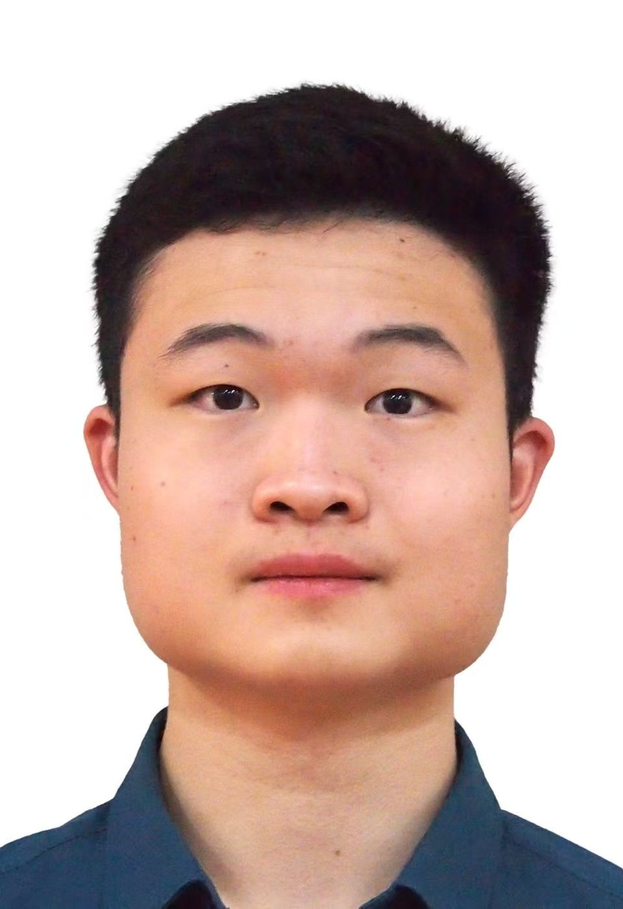

AI & MACHINE LEARNING
Hi, my name is Lee.
Exploring artificial intelligence, machine learning, creativity, and the way technology connects to everyday life.
About Me ↓
A little about who I am.
I took CS 180 out of curiosity and to fulfill course requirements, hoping it would broaden my understanding of Computer Science–related fields. My first memorable experience with AI was using Copilot for image generation two years ago; it sparked my creativity and curiosity. One concern I carry is how the education system and society can balance the use of AI with the development of individual knowledge and skills. I am especially interested in learning outcome 3 because it connects AI to everyday life. Outside of class I am a spiritual pursuer who enjoys reading books, playing music, making friends, and exploring different cultures and religions. I am currently practicing the piano piece Flower Dance with full dedication, and I recently joined the Drexel Sailing Club after a friend who instructs sailing in Germany inspired me.